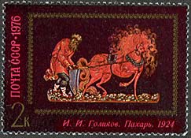
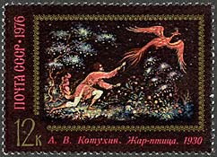
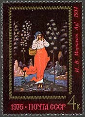
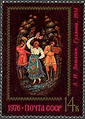
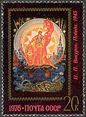
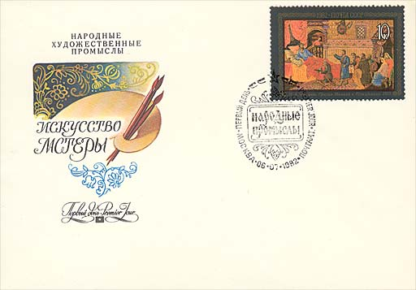

The unbelievably colorful art of Palekh is known in all countries of the world. The elegant black-lacquered art pieces on which the heroes of Russian folklore come to life - the amazing fire-birds and the gold-manned troikas subjugate us with fairy tale-like world of beauty, movement and harmony of their color chords.
|
 |
 |
The village of Palekh is stretches widely out among the woods and fields in a picturesque corner of the Ivanovo county. In the XV century it was a part of the Vladimir-Susdal lands and was one of the first ancient centers of icon drawing trade. In the XVII-XVIII centuries Palekh's craftsmen became the most famous in the icon business. They worked out a style all of their own which can be distinguished by the fine line tempera drawing saturated with gold. Their work was valued for the depth of its images and for their fairy-tale-like ornamental design.
 |
 |
 |
After the 1917 Bolshevik's coup, when the icon business was prohibited, Palekh masters tried to decorate wooden toys, dishes, porcelain and glass. But the most interesting way turned out to be painting black-lacquered boxes made of papier-mâché by the likes of E.Golikov, E.Vakurov, A.Kotukhin, and E.Bakanov. Those masters along with some of their fellow villagers established, in 1924, a shop of ancient art in which a new kind of folk art was born-the Palekh artistic lacquers. By the end of 1920`s there was a wide assortment of Palekh art objects. Beautiful by their proportions, elegant by form, the little jewelry boxes, bead boxes, and powder cases beamed with bright colors and sparkled with golden decorative patterns. Ordinary things were transformed into objects of art in the hands of talented artists. Ancient hunting scenes and battles from Russian epics, village scenes and prayers, literary plots and the joy of work - everything was reflected in the art of these distinctive artists. In their art they embody the folk culture. They are inherent of the passionate feeling of life and modernity. The art of Palekh miniatures expresses the true national character. Many examples of Palekh art have received recognition at international exhibitions and have become world-known. After: E.Zhuravskaya, http://russia-in-us.com/Palekh/

The above FDC is part of a set issued in 1982, under the title: Lacquer ware Paintings from Mstera. Boxes from Mstera, though, usually have the lightest colors. Artists there almost never choose black for their backgrounds, and instead use light blue, pink, gold or ivory colors. With the addition of these colors, landscapes generally play a more prominent role in Mstera works, and people and objects tend to take a place within the background setting rather than remain separate from it. In Mstera, a wide range of artistic talent exists. While some artists paint dynamic and elaborate scenes from fairy tales or famous battles, others concentrate on exquisite floral designs. (Source: http://www.lacquerbox.com/guide.htm)
Links:
| Created
12/29/2002.
Revised:
12/29/02.
Copyright © 2002 by Victor Manta, Switzerland. All rights reserved in all countries. |
|